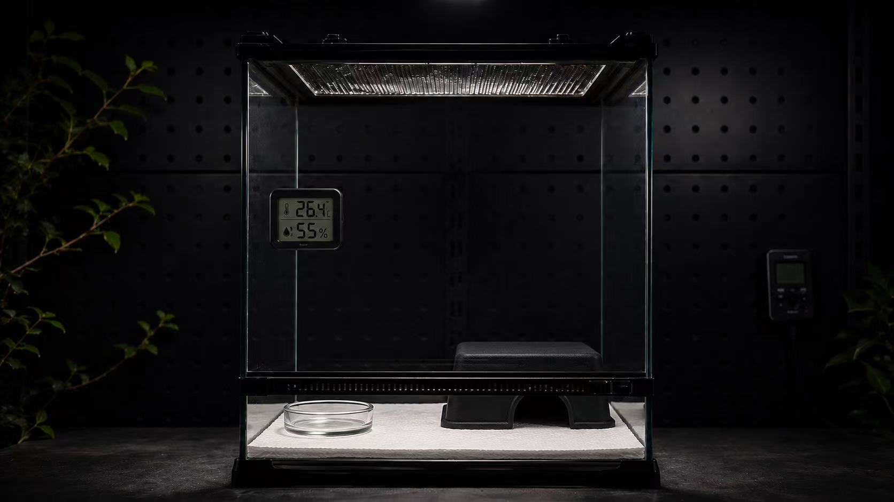

EQUIPMENT
Habitat Detail
基础设备
设备不是越多越好，而是为了稳定温度、湿度、照明和安全感。

Base Items
基础设备
温湿度计、加热与照明设备、躲避、水盆和稳定垫材，是多数环境方案的基础骨架。
Selection Rule
选择原则
先看物种需要什么环境，再决定设备功能；设备应服务于稳定、安全和可维护。
01
温湿度计
用于观察环境变化，帮助判断加热、通风和喷雾是否合适。
02
加热照明
根据物种规划热源、照明或 UVB，并保留可选择的区域。
03
躲避与水盆
基础物件要稳定、易清洁，并能提供安全感和日常补水。
常见误区
不要只买装饰，不准备基础监测工具。看起来完整的箱体，也需要可验证的温湿度状态。